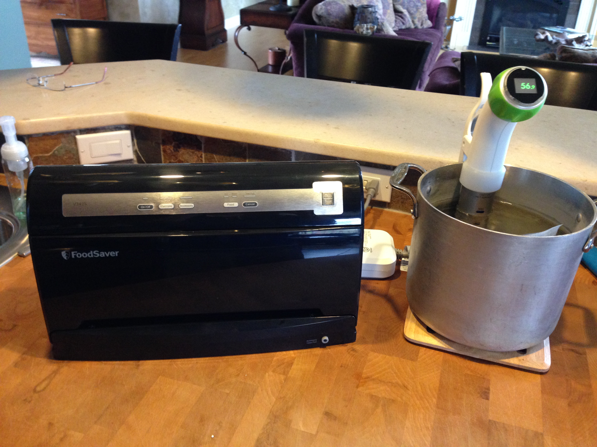

The Sous Vide Adventure Begins
When we were in Las Vegas last fall, I had the most delicious steak I’ve ever eaten. It was at Bobby Flay’s Mesa Grill. This blew me away. Although I love a good steak at a restaurant, usually I can do just as well at home. But this steak was amazing. This was a two inch think tenderloin that was perfectly medium rare from edge to edge! The very outside edge was seared perfectly too. Whoa, I thought at the time, how did they do that? How can you have a steak so uniformly done? The answer of course is Sous-vide.
Since then, I’ve been reading the books, like Modernist Cuisine at Home, and lots of articles on “Serious Eats”, I’ve seen it done on Chopped and Iron Chef. Then the other day I got a Kickstarter notice about the new Anova Precision Cooker. Its an immersion circulator that lets you do sous-vide cooking without one of the big fancy sous-vide appliances. This just clips on the edge of one of your big pots, and away you go. Alton Brown would love it. Unfortunately this new fancy one that even connects to your iPhone will not be available until later this year, so I decided to give the Nomiku a try. It was the highest rated of three options on Amazon, and was Prime Eligible. If I really like it I figure I can always upgrade to the Anova later. So here's my setup for an afternoon of high-tech cooking:
The idea behind sous-vide cooking is that you can cook at a lower temperature for a longer period of time. bringing the water and your food into equilibrium. Whats cool about that is that you can cook a steak to exactly 132 degrees, and you can leave it go for an extra hour or two and it will remain at the perfect medium rare done-ness. You can also cook chicken. without heating it to 165 degrees!
What!? I thought? this cannot be. But then I started to do some reading and once again science rocks. http://www.seriouseats.com/2010/04/sous-vide-basics-low-temperature-chicken.html It turns out that you can kill all the nasty bacteria at 135 degrees, it just takes longer! Like 90 minutes! Heating chicken to 165 kills the bacteria too, instantly. But it also gives you dry chicken.
One other aspect of sous vide is that you use a vacuum sealer to seal your food in plastic before you immerse it in the water. This allows you to season the food and add aromatics to your bag. Yum.
Of course this also precipitated a quick trip to the hardware store to get a FoodSaver vacuum sealer. Yay more kitchen toys.
Right now, I’m trying a steak. I sealed it up and dropped it in. In a couple of hours I’ll get out the cast iron skillet and heat it up good and hot, so that I can sear the meat when it comes out. A glass of Rombaur and a baked potato and I’m all set.
Comments